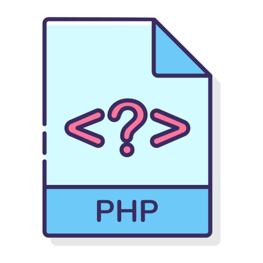

Compétences


Bienvenue sur mon portfolio, où vous trouverez de nombreuses informations afin d'en savoir davantage sur moi. Pour faire court, je m'appelle Cynthia et je suis actuellement développeuse spécialisée dans le Traitement Automatique du Langage (NLP).
Tout juste diplômée d'un Master 2 en Traitement Automatique du Langage, un domaine pluridisciplinaire; associant la linguistique et l’informatique, j'élabore et conçoit tout produit où la langue (écrite ou parlée) intervient.
J'ai réalisé de nombreux projets personnels ou académiques en TAL, sous plusieurs formes (site web ou application) et en utilisant divers langages de programmation.
Curieuse, j'apprécie en apprendre davantage et découvrir de nouvelles disciplines. J'aime partager et échanger sur mes idées avec d'autres professionnels et faire travailler ma créativité.
Découper automatiquement les mots composés allemands à partir d'un énoncé et obtenir la catégorie syntaxique de chaque composant du mot.
En savoir plus • GitIdentifier automatiquement les liaisons du français dans un texte et les annoter en indiquant le phonème de liaison correspondant.
En savoir plus • GitCe programme a pour but d'anonymiser des données personelles (nom, adresse, etc). Il a été conçu à partir d'annonces immobilières postées sur le site Leboncoin.
En savoir plus • Git